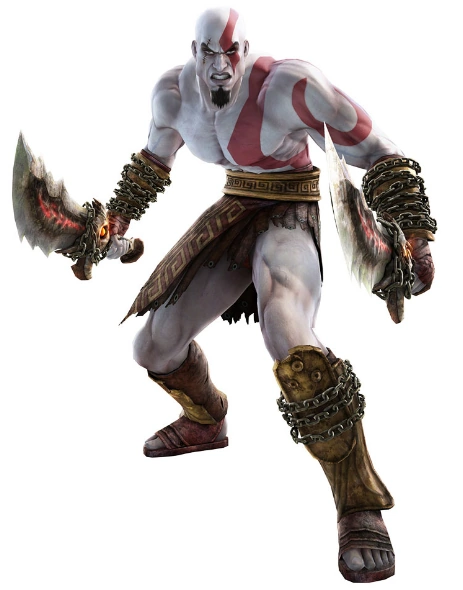
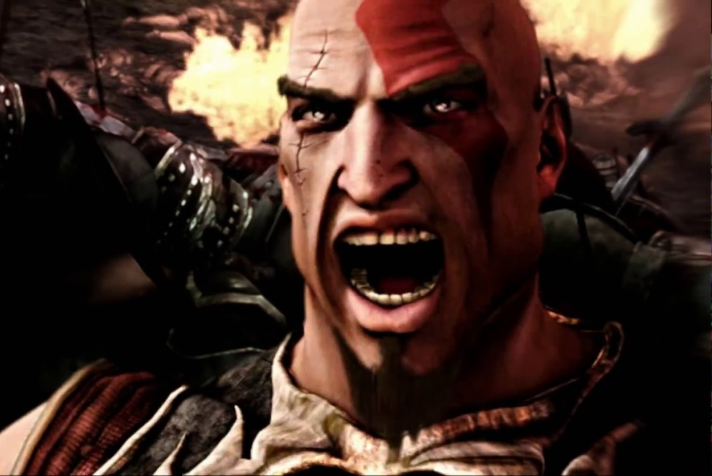

God Of
War
Santa Mônica - 2005

Baseado na mitologia grega, é ambientado na Grécia antiga com a vingança sendo o tema central. O jogador controla o protagonista Kratos, um guerreiro espartano que serve os deuses do Olimpo. A deusa Atena atribui a Kratos a missão de matar Ares, o deus da guerra e seu ex-mentor, que enganou Kratos para que matasse sua própria esposa e filha. Enquanto Ares ataca a cidade de Atenas por ódio a Atena, Kratos embarca em uma busca para encontrar o único objeto capaz de deter o deus de uma vez por todas: a lendária Caixa de Pandora.
God of War é um jogo eletrônico de ação-aventura e hack and slash desenvolvido pela Santa Monica Studio e publicado pela Sony Computer Entertainment (SCE). Lançado pela primeira vez em 22 de março de 2005 para PlayStation 2, é o primeiro título da série com o mesmo nome e o terceiro cronologicamente.
A jogabilidade de God of War centra-se no combate baseado em combos, conseguido através da arma principal do jogador: as Lâminas do Caos, e uma arma secundária adquirida mais tarde no jogo. Ele apresenta quick time events que exigem que o jogador complete várias ações no controle de jogo em uma sequência cronometrada para derrotar inimigos e chefes mais fortes. O jogador pode usar até quatro ataques mágicos e uma habilidade de aprimoramento de poder como opções alternativas de combate. Também possui quebra-cabeças e elementos de plataforma.
God of War vendeu mais de 4,6 milhões de cópias em todo o mundo,[1] tornando-se o décimo primeiro jogo mais vendido do PlayStation 2 de todos os tempos. Considerado como um dos melhores jogos de ação e aventura para a plataforma, ganhou vários prêmios de Jogo do Ano. Em 2009, a IGN nomeou God of War como o sétimo melhor jogo de PlayStation 2 de todos os tempos. Foi altamente aclamado por seus gráficos, trilha sonora, apresentação e história, além de sua jogabilidade. Ele foi saudado como um dos melhores jogos já feitos.
"Eu não sou mais o mesmo homem daquele dia, o monstro que você criou retornou... para te matar!"
- Personagem: Kratos
- Codinome: Fantasma de Sparta
- Altura: 1,86
- Peso: 80 Kg
- Idade: 34 Anos
Um dos principais motivos do sucesso de God of War, sem dúvidas, é o seu enredo. Para quem tem o mínimo de conhecimento de mitologia grega, ou simplesmente curte os jogos focados no desenvolvimento de uma história, a série é um prato cheio. Além de ser muito bem contada, é uma aventura com a qual o jogador se identifica e na qual fica imerso.
A história é contada em flashbacks no primeiro God of War – e revisitada em God of War Ascension. O que acontece é que Ares engana Kratos e faz com que ele acabe matando sua própria família. O guerreiro, então, jura vingança. Neste jogo, vemos o comecinho da jornada, quando ele é preso pelas Três Fúrias, torturadoras das almas pecadoras.